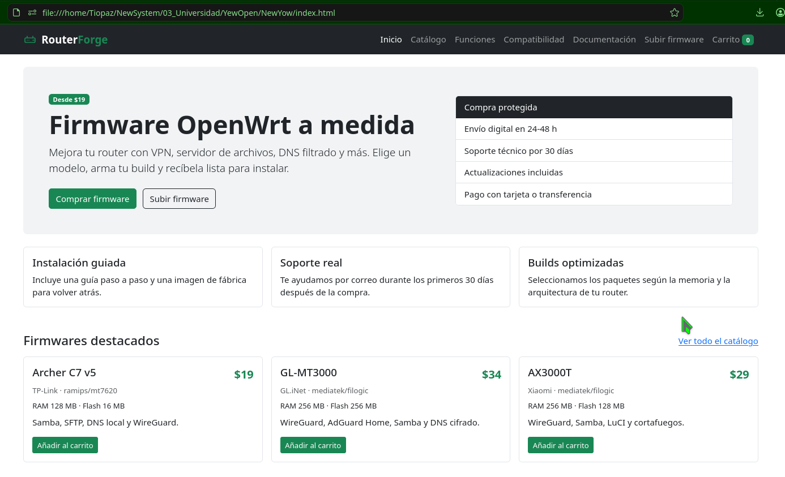
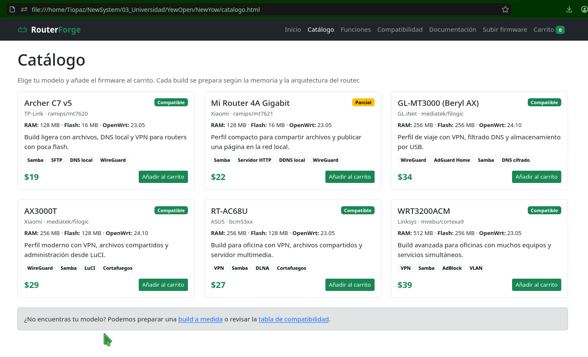
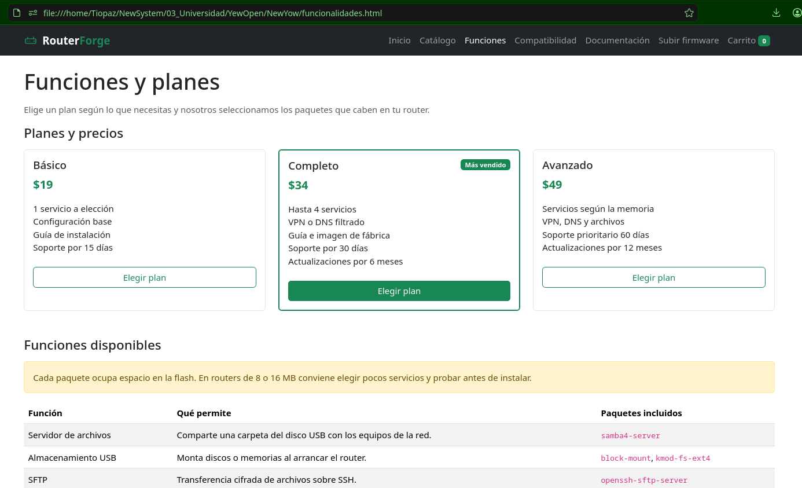
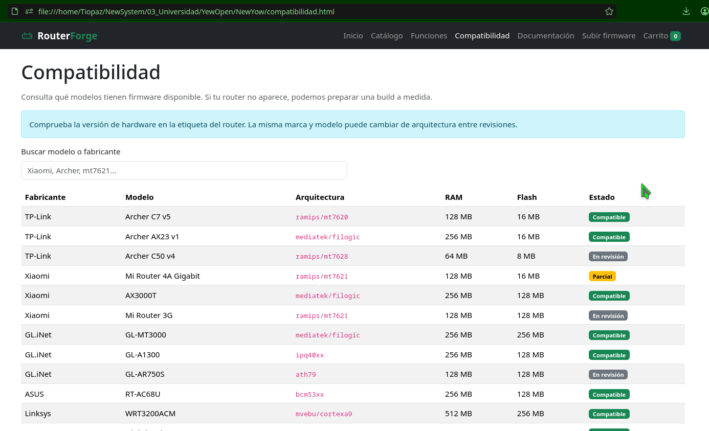
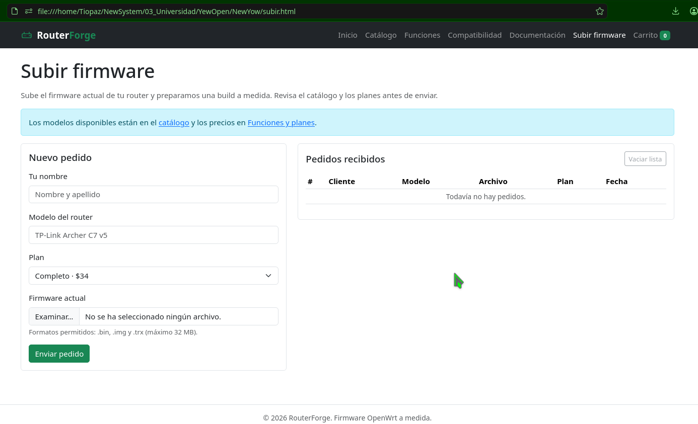
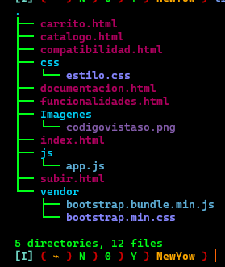
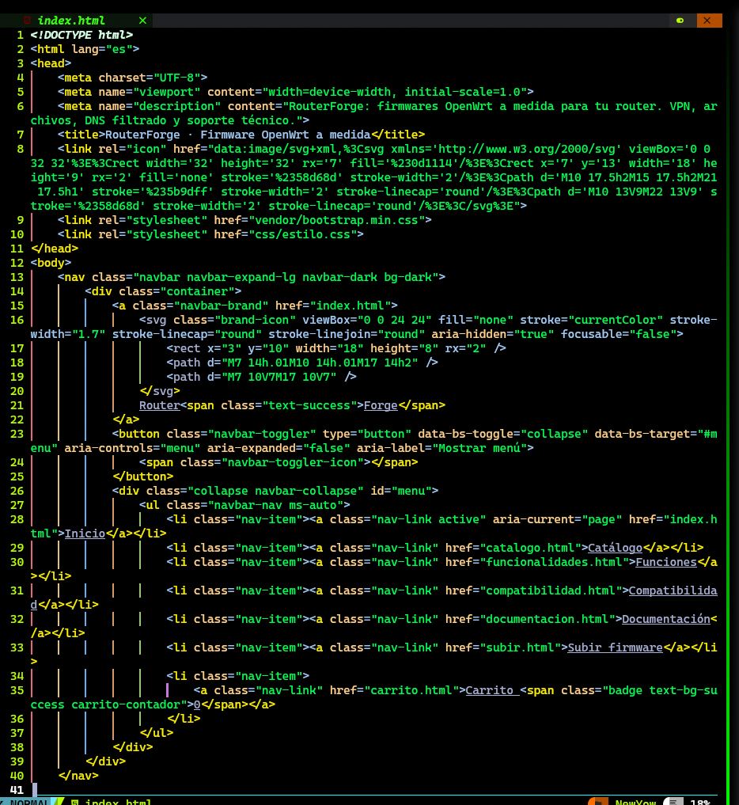

Informe del proyecto
RouterForge · Tienda de firmwares OpenWrt
Desarrollo Web I · 2026
1. Introducción
RouterForge es una tienda web de firmwares personalizados para routers OpenWrt. El sitio permite conocer los modelos compatibles, comparar planes, añadir productos al carrito, registrar pedidos y consultar documentación de instalación y soporte.
El proyecto se desarrolló como trabajo del primer curso de Desarrollo Web. La prioridad fue aplicar HTML, CSS y JavaScript de forma clara, con una estructura ordenada, un diseño responsive y un lenguaje comercial propio de una tienda.
2. Objetivos
Objetivo general: diseñar y desarrollar un sitio de ventas funcional, responsive y fácil de mantener.
- Aplicar HTML5 semántico y accesible.
- Usar Bootstrap para el sistema de grillas y los componentes de interfaz.
- Separar la estructura, los estilos y el comportamiento en archivos distintos.
- Implementar un carrito y formularios con JavaScript.
- Documentar las decisiones de diseño y los problemas encontrados.
3. Justificación de las tecnologías
HTML5
Se usó HTML5 porque permite una estructura semántica clara con etiquetas
como header, nav, main,
section y footer. También ofrece formularios
nativos con validación y etiquetas label, lo que mejora la
accesibilidad. El icono del router se incluyó como SVG dentro del HTML y
como favicon vectorial.
Bootstrap 5.3
Bootstrap se eligió por su sistema de grillas responsive y por sus componentes ya probados: navbar, cards, badges, alerts, tablas, formularios, accordion, offcanvas, modal y toast. Esto permitió construir una tienda coherente en menos tiempo y con buen comportamiento en móvil.
Los archivos de Bootstrap se guardaron en vendor/ para que el
sitio no dependa de una conexión a CDN. La desventaja es que el proyecto
pesa más; la ventaja es que funciona igual en local y en cualquier hosting
estático.
CSS propio
No se reescribió Bootstrap. Solo se creó css/estilo.css para
la identidad visual: icono de la marca, color verde de precios y llamadas
a la acción, fondo del hero, testimonios y resaltado del plan recomendado.
El resto del layout se resolvió con clases utilitarias de Bootstrap.
JavaScript
Se usó JavaScript sin frameworks ni jQuery porque Bootstrap 5 no necesita
jQuery y el alcance del proyecto no requiere React ni Vue. Con JavaScript
nativo se trabajó con el DOM, eventos, localStorage,
JSON y temporizadores.
Todo el comportamiento está en js/app.js, dentro de una función
autoejecutable (IIFE) para no contaminar el ámbito global. Las funciones
están separadas por responsabilidad: carrito, panel lateral, filtros,
formularios y contadores.
localStorage
El carrito, los pedidos y las solicitudes se guardan en el almacenamiento
local del navegador mediante localStorage. Esto permite que el
carrito sobreviva al cambiar de página y que el contador del navbar se
mantenga actualizado. En una versión de producción, esta persistencia se
sustituiría por una API y una pasarela de pago.
4. Estructura del proyecto
NewYow/
├── index.html
├── catalogo.html
├── funcionalidades.html
├── compatibilidad.html
├── documentacion.html
├── subir.html
├── carrito.html
├── informe.html
├── css/
│ └── estilo.css
├── js/
│ └── app.js
├── vendor/
│ ├── bootstrap.min.css
│ └── bootstrap.bundle.min.js
└── Imagenes/
├── paginainicio.png
├── catalogo.png
├── Funcionesplanes.png
├── Compatibilidad.png
├── Subirfirmware.png
├── estructura.png
└── codigovistaso.png
La organización sigue la responsabilidad de cada archivo: las páginas HTML
están en la raíz, los estilos en css/, el comportamiento en
js/, las librerías externas en vendor/ y las
capturas del proyecto en Imagenes/.
5. Estructura del código
HTML
Cada página repite la misma cabecera y el mismo pie para mantener la
navegación coherente. El enlace activo se marca con aria-current.
Se usan etiquetas semánticas, textos alternativos en las imágenes y
label en todos los campos de formulario.
La repetición del navbar y del footer es una decisión consciente: es simple de entender en un primer curso. Como mejora futura se podría generar con JavaScript o con un generador de sitios estáticos.
CSS
El CSS propio es corto y se apoya en Bootstrap. Se definen clases como
.brand-icon, .precio, .hero,
.testimonio y .plan-destacado. El resto se resuelve
con utilidades de Bootstrap: container, row,
col-md-*, card, btn,
badge, alert y table-responsive.
JavaScript
js/app.js está organizado en bloques:
- Funciones auxiliares de almacenamiento, escape de texto y formato de precios y fechas.
- Estado del carrito: leer, guardar, agregar y calcular totales.
- Panel lateral del carrito y notificaciones tipo toast.
- Renderizado de la página del carrito y del formulario de pedido.
- Filtro con retardo (debounce) del catálogo y filtro de compatibilidad.
- Formulario de pedido a medida con validación y tabla de pedidos.
La conexión entre HTML y JavaScript se hace con atributos
data-*: data-agregar, data-id,
data-nombre, data-precio,
data-accion y data-panel-quitar. Así se evita
escribir JavaScript dentro del HTML.
6. Diseño visual y experiencia de usuario
La paleta es simple: navbar oscuro, fondo blanco y verde como color de acción. Esa combinación mantiene la lectura cómoda, da contraste a los botones y evita que la tienda parezca recargada.
- Tipografía: pila de fuentes del sistema que trae Bootstrap; jerarquía con
display-5,h4,h5,leadysmall. - Componentes: cards para productos y planes, badges para compatibilidad, alerts para avisos, tablas para especificaciones y accordion para preguntas frecuentes.
- Responsive: grillas con
col-md-*ycol-lg-*, navbar colapsable y tablas dentro detable-responsive. - Accesibilidad: etiquetas en formularios,
aria-currenten la navegación,aria-controlsen el menú, textos alternativos y foco visible.
7. Interactividad con JavaScript
Además de lo básico, se agregaron interacciones que demuestran manejo de estado, eventos y componentes de Bootstrap.
Carrito y panel lateral
Al pulsar “Añadir al carrito”, el producto se guarda en
localStorage y el contador del navbar se actualiza. El panel
lateral se genera dinámicamente con JavaScript y se abre con la API
Offcanvas de Bootstrap. Los botones “Quitar” usan delegación
de eventos, por lo que funcionan aunque el contenido se vuelva a dibujar.
Notificaciones toast
Cada vez que se agrega o quita un producto se muestra un aviso breve con el
componente Toast. El elemento se elimina cuando termina la
animación para no acumular nodos en el documento.
Búsqueda con retardo (debounce)
En el catálogo, el filtro no se ejecuta en cada tecla de inmediato: se espera un pequeño tiempo para evitar trabajo innecesario. Es una técnica sencilla de optimización.
var temporizador;
buscador.addEventListener("input", function () {
clearTimeout(temporizador);
temporizador = setTimeout(filtrarCatalogo, 200);
});Filtros en tablas y tarjetas
El buscador de compatibilidad recorre las filas de la tabla y oculta las que no coinciden con el texto. El catálogo hace lo mismo con las tarjetas de producto y muestra un mensaje cuando no hay resultados.
Formularios y pedidos
El formulario de “Subir firmware” valida nombre, modelo y archivo, comprueba
el tamaño máximo y simula un envío con setTimeout. Después
guarda el pedido y lo muestra en una tabla. El carrito también valida los
datos del comprador antes de confirmar el pedido.
Visor de imágenes y botón de impresión
En este informe, las capturas se abren en un modal de Bootstrap. El visor
usa atributos data-imagen, data-titulo y
data-texto para no duplicar el código de cada imagen. También
se agregó un botón que llama a window.print() para guardar el
informe como PDF.
8. Galería de capturas (índice de imágenes)
Haz clic en cualquier imagen para verla ampliada. Cada captura muestra una parte de la tienda y permite explicar las decisiones de diseño y el uso de Bootstrap.




col-md-6 col-xl-4), cards,
badges y botones de acción. Es la pantalla principal de venta.




table-responsive evita que la tabla se rompa en
móvil, y los badges indican el estado de cada modelo.




css/,
comportamiento en js/, librerías en
vendor/ y capturas en Imagenes/. Esta
separación facilita el mantenimiento.


data-* y la organización de
app.js en funciones pequeñas.
9. Retos y soluciones
- Cambiar el enfoque de demo técnica a tienda. Se eliminaron los textos técnicos de demostración y se reescribió el contenido con lenguaje comercial, manteniendo la misma base técnica.
- Mantener el navbar y el footer en siete páginas. Se repitió el mismo bloque en cada HTML para que el proyecto sea fácil de leer. Como mejora futura se podría generar con JavaScript o con un generador de sitios estáticos.
-
Carrito persistente entre páginas. Se resolvió con
localStoragey conversión a JSON, contry/catchpara evitar errores si el dato guardado está dañado. -
Contador del carrito en todas las páginas. Una función
común actualiza todos los elementos con la clase
carrito-contador, y el eventostoragepermite sincronizar pestañas abiertas. - Evitar duplicar el panel lateral en cada HTML. El offcanvas se genera desde JavaScript y se inserta en el documento al cargar la página.
-
Tablas en pantallas pequeñas. Se envolvieron en
table-responsivepara permitir desplazamiento horizontal sin romper el layout. - Búsquedas fluidas. El catálogo usa debounce para no filtrar en cada pulsación, y la tabla de compatibilidad actualiza los resultados en vivo.
-
Rutas y mayúsculas. La carpeta de imágenes se llama
Imagenescon mayúscula inicial; en Linux eso importa y se usó la ruta exacta en todas las referencias. -
Accesibilidad. Se añadieron etiquetas, textos
alternativos,
aria-current,aria-controlsy mensajes conaria-liveen las notificaciones.
10. Conclusiones
Se logró una tienda completa y responsive con siete páginas, un carrito funcional, formularios validados, filtros de búsqueda y un informe con capturas. El proyecto permitió aplicar los fundamentos de HTML, CSS y JavaScript y comprender cómo Bootstrap acelera el desarrollo sin impedir la personalización.
El resultado es un sitio simple, coherente y fácil de ampliar. La experiencia principal fue entender que una buena interfaz no depende de muchos efectos, sino de una estructura clara, un lenguaje consistente y componentes que el usuario ya reconoce.
11. Mejoras futuras
- Conectar el carrito y los pedidos con una API y una pasarela de pago.
- Añadir páginas de detalle de producto y un panel de administración.
- Incorporar cuentas de usuario e historial de pedidos.
- Optimizar las imágenes y aplicar carga diferida en todo el sitio.
- Agregar pruebas automatizadas y una revisión de accesibilidad.
- Unificar navbar y footer con un generador de sitios estáticos.